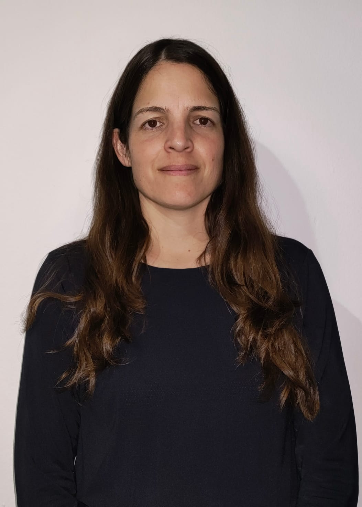
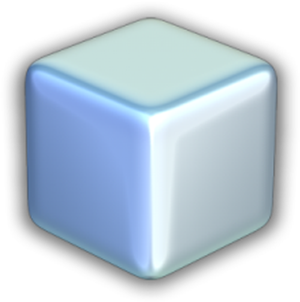
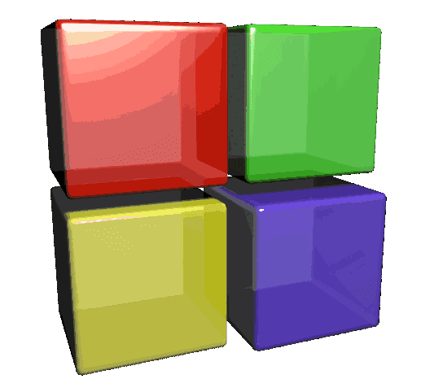
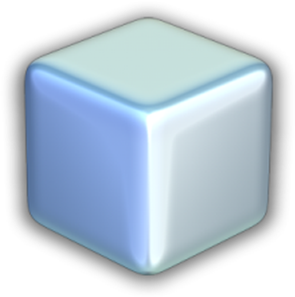
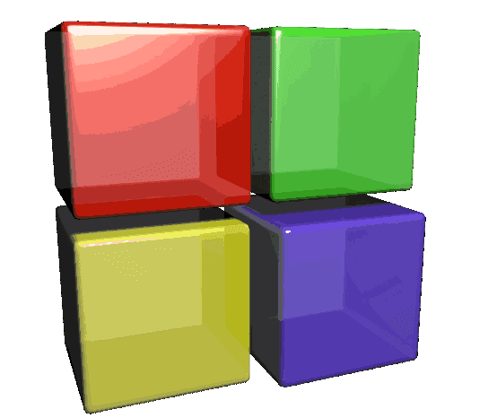

ACERCA DE MI
|  |
Actualmente estoy cursando el segundo año de la Tecnicatura Universitaria en Programación dictada por la UTN, regional de Pacheco. Previamente a esta carrera, había realizado el curso "Argentina Programa 4.0", dictado por la Universidad de La Punta, que me incentivó a profundizar estos conocimientos. |
CONOCIMIENTOS
Lenguajes de Programación:


IDE:

 



Otros:

MIS PROYECTOS
| GESTIÓN DE PRODUCTOS | CABEZONES | Aplicación de escritorio realizada con Winform en C#. | Videojuego multijugador de fútbol realizado en C++ con las librerías SFML y Box2D. |
|---|
OTROS ESTUDIOS
Soy Profesora en Educación Física, recibida en la Universidad Nacional de Luján con Diploma de Honor. Tengo experiencia een los distintos niveles de enseñanza escolares, así como, en el ámbito no formal. Trabajé principalmente en clubes y polideportivos, donde me especialicé en la enseñanza de natación a grupos de distintas edades y capacidades. Esto me permitió desarrollar habilidades sociales, manejo de grupos y adaptación a diferentes circunstancias.
Idiomas:
Ingles nivel upper-intermediate.